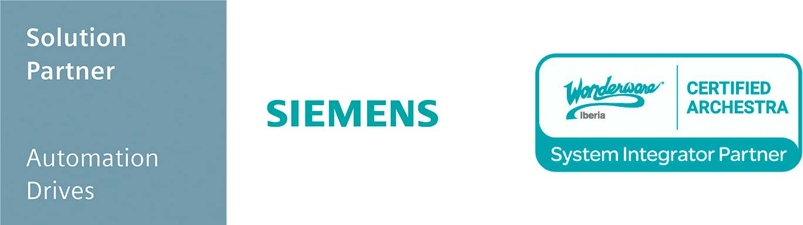

¿Quienes somos?
Automatización y Control Industrial
DINALAN nace en 1992 con vocación de servir a la empresa industrial a través de nuestros servicios especializados de apoyo y asesoramiento en los procesos de producción automatizados. Haciendo uso de las herramientas y tecnologías más adecuadas para competir en el mercado actual.
Sectores públicos y privados
Especializada en el desarrollo de soluciones avanzadas de control y regulación de procesos industriales, trabaja en gran número de sectores, tanto en proyectos llave en mano como aportando soluciones de integración de diferentes tecnologías.
Ser su equipo de desarrollo o su socio tecnológico
Nuestro objetivo es llegar a formar parte del equipo de desarrollo e implementación de las empresas para asesorar, implementar y mantener los proyectos internos desarrollados. De esta forma conseguimos adecuar su empresa a las necesidades y reclamaciones del mercado. Aspiramos a ser socios tecnológicos de nuestros clientes, a establecer alianzas estables para aumentar la productividad de sus instalaciones.
Hitos más importantes
| Año | Hitos | información |
|---|---|---|
| 1992 | Origen | Nace Dinalan como ingeniería de software industrial. |
| 1995 | Metro de Bilbao | Dinalan da sus primeros pasos en el sector publico abarcando la empresa privada como la pública. |
| 1997 | Adelpro | Se diseña y desarrolla un SCADA propio comercializado por Siemens. |
| 1998 | CABB | Después de tres años en el sector público de infraestructuras y transportes, se da un nuevo paso comenzando con la renovación completa de la depuradora de Galindo. |
| 2005 | CABB (Telemando) | Este fue el proyecto con el que quedó demostrada la capacidad para asumir proyectos de gran envergadura. Una necesidad de disponer de un sistema que posibilitase a operadores de Galindo y Venta Alta el control remoto de las estaciones de abastecimiento distribuidas por Vizcaya. Se realizó el diseño de de: Instalación eléctrica, Software y PLC así como, el diseño de un sistema de Comunicaciones redundantes. |
| 2007 | Reta | Se llevó a cabo la programación del control de los dispositivos que forman el control de los terminales. Diseñando y desarrollando el sistema de máquina de venta automática basado en PC logrando así que convivan 3 sistemas: Sistema de Gestión de Medios de pago, Sistema de control de aplicaciones, Sistema de administración remonta. |
| 2009 | Sistemas MES/Informática Industrial | Dinalan se lanza a poner en marcha proyectos de este tipo, después de varios años desarrollando en instalaciones de menor volumen. El momento clave ocurre con el desarrollo de proyectos como el de Nervacero, y sus áreas de Acería y Laminación con el fin de renovar, unificar, ampliar y mejorar los antiguos sistemas de control de producción. Además del destacable sistema/software del parque de alimentación de cucharas de Tubos Reunidos. |
| 2010 | Departamento Eléctrico | Tras la realización de proyectos, se consolidó el departamento de ingeniería eléctrica. Con ello se implementó la dirección de obra y la realización de proyectos llave en mano, así como, la realización de proyectos en el ámbito exclusivo de la ingeniería eléctrica. |
| 2012 | MBE | Nos hemos convertido en un proveedor importante dentro de MERCEDES BENZ ESPAÑA desarrollando proyectos que abarcan tanto el área de Proceso como el de Gestión y el de Manutención, tanto directamente para MBE como trabajando para diferentes proveedores de instalaciones. | 2016 | Apertura oficina Vitoria | Se establece un nuevo centro de trabajo con la apertura de la oficina en el edificio de la Azucarera de Vitoria (Avda. de los huetos). | 2019 | Aernova | Se realiza primer proyecto en el sector de la aeronáutica dentro de la empresa Aernova. |